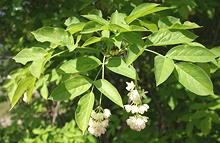
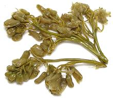

SAFARI
Users
Bladdernut Family
[Staphyleaceae]
Some others of the 10 bladdernut species may provide edible seeds flowers or oil, but I have no definitive information on them.
European Bladdernut [Staphylea pinnata]
This small tree (to 20 feet) is native to Europe and naturalized in
the British Isles. Panicles of white bell shape flowers develop into
bladder-like fruit containing seeds. The seeds are edible and said
to taste similar to pistachios.
Photo by Marco Schmidt distributed under license
Creative Commons
Attribution 3.0 Unported
Jonjoli [Colchis Bladdernut, Caucasian Bladdernut; Jonjol (Armenia); Staphylea colchica]
Native to Republic of Georgia, this small tree (to 10 feet) produces
panicles of small white bell shape flowers that develop into
bladder-like fruit containing seeds. The flowers are edible and
decorative in salads. They are much sought after in Georgia to use
as pickled appetizers. The seeds can be pressed to yield an edible
oil. The seeds are about 1/4 inch long.
Details and Cooking.
|